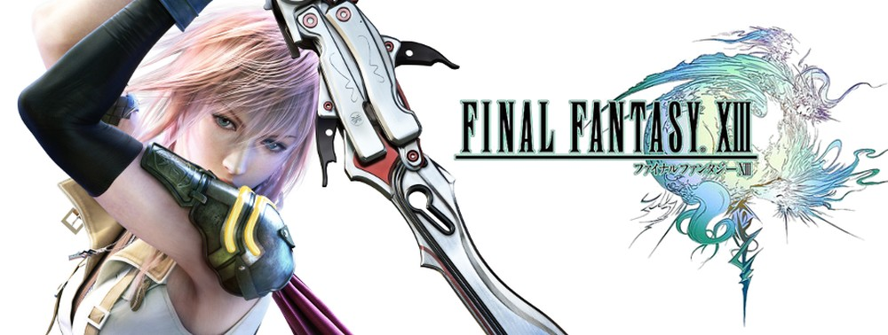
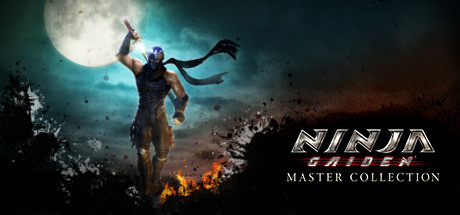
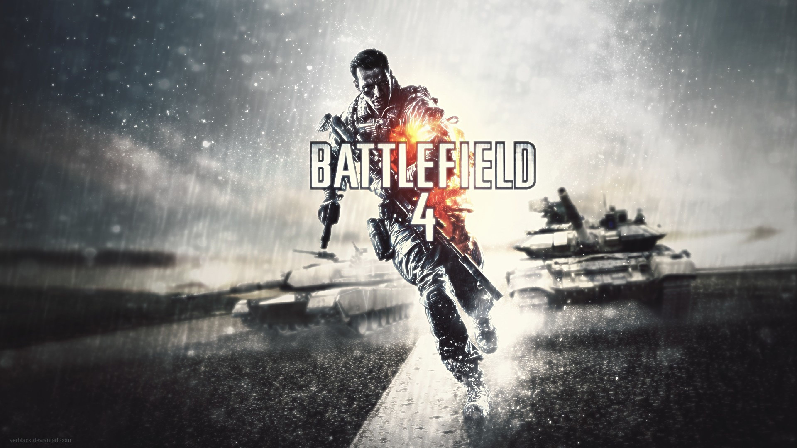

Favorite Video Game Series
Final Fantasy
Set in multiple fantasy worlds, the Final Fantasy game series is a creative art that spans back to the NES with FFI. Each game gives a new story and has turned into an inspiration for me in terms of game design. In Particular, FF13 has a cool battle system that lets you commit to actions once a certain amount of time has passed. This Active Time Battle (ATB) system gives it a unique feel, and is something that I would like to recreate myself.
Ninja Gaiden
This bloody and gory video game has some of the best Artificial Intelligence I've ever seen in a video game. Along with the nice selection of tools that the game supplies you with, the combos, more specifically the gameplay button loop, feels very rewarding to execute and the interactions between them are vast for an older type of game. I have not played another action-RPG that is as engaging as this series.
Battlefield
What can I say about the Battlefield franchise that hasn't been discussed before. Massively scaled battles, beawutiful graphics, and top tier shooting mechanics all come together to make a great game that has rivaled the Call of Duty franchise.